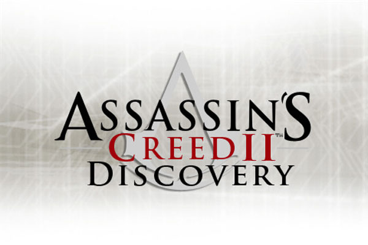

TITOLO: Assassin's Creed: Discovery
SVILUPPO: Ubisoft Montreal
DATA DI USCITA: 20 novembre 2009 (Nintendo DS, iOS)
COLLOCAMENTO STORICO: Rinascimento italiano
TRAMA:
Il gioco prende luogo nel 1491, tra gli eventi della Battaglia di Forlì e Falò delle Vanità in Assassin's Creed II. A Ezio Auditore viene richiesto un incontro con Antonio, capo della gilda dei ladri a Venezia. Una volta raggiunto Antonio, scopre che lui e Luis Santangel hanno bisogno di aiuto. Cristoforo Colombo, alleato di Luis, ha un incontro con Rodrigo Borgia, interessato ai suoi piani di navigare verso ovest. Luis sospetta che ci sia una trappola e richiede a Ezio di salvare Cristoforo. Quando Ezio raggiunge il luogo dell'incontro scopre che effettivamente era davvero una trappola. Comunque, Cristoforo viene salvato con successo.
Quindi, Ezio si reca in Spagna, per andare in soccorso di alcuni amici Assassini francese Carlo VIII, si reca a Barcellona per eliminare gli inquisitori: per primo Gaspar Martinez, che aveva fatto uccidere un assassino, poi Pedro Llorente, che aveva condannato al rogo un altro assassino, in seguito Juan de Martillo, membro dell'Inquisizione più legato alle trame dello Spagnolo, ed infine l'inquisitore Generale, Tomás de Torquemada. Infiltratosi nel suo palazzo Ezio lo raggiunge, ma Tomás fugge. Ezio, infine, non riesce ad uccidere Torquemada, e, avendo compiuto la propria missione, ritorna in Italia ringraziando Luis e ricominciando la ricerca del manufatto